Una mirada a los datos del concurso R de 2019
El pasado mes de noviembre, mientras preparaba algunas notas de la presentación a las Jornadas R con una persona de mi equipo, encontré la página del grupo R de Asturias, y en ella la reseña de un concurso de análisis de datos mediante R en su segunda convocatoria. La fecha límite de presentación era octubre, por lo que estaba ya fuera de plazo, y tampoco los concursos me interesan demasiado; no obstante, me propuse echar una mirada a los datos cuando tuviese tiempo, para poder después intercambiar comentarios con el equipo R de Asturias, con el que me había propuesto conectar.
Este fin de semana me descargué las bases de datos, cargué mis librerías de trabajo y me puse a ello.
library(knitr)
library(rmarkdown)
library (tidyverse)
library(scales) # para ggplot
load ("Carrizal.RData")
load ("Canizal.RData")
load ("Granja.RData")
paged_table(head(granja, n=20))El origen y tipo de datos está explicado en la página del concurso, en https://rusersasturias.github.io/contest/, así como las bases del mismo.
Para facilitarme la lectura de los contenidos de las variables, me creé también una tabla con las descripciones de las etiquetas de columna ; estas descripciones pueden incorporarse a las etiquetas de factor mediante la funcion label()
etiquetas <- read.csv2("descripcion variables.csv")
paged_table(etiquetas)Desgraciadamente, hay algún problema que aparece después en las llamadas a funciones tidyverse, o bien yo no he sabido utilizarlo, por lo que he descartado usar esta opción.
Esta sería la forma de hacerlo, sobre el dataframe df:
library(Hmisc)
df <- granja
nombres <- as.vector(etiquetas$descripcion)
variables <- as.vector(etiquetas$variable)
label(df) <- as.list(nombres[match(names(df), variables)])
paged_table(head(df,, n=50))La tabla muesta la línea ne la que aparecen las etiquetas de descripción que pueden visualizarse en RStudio mediante la instrucción view(df)
En cualquier caso, no las utilizaré aquí para no alterar el funcionamiento de los pipe
Volviendo a los datos, como la estructura de las tres tablas es idéntica y cada tabla está bien identificada mediante la columna estacion, he preferido analizar los datos en conjunto, y para ello los incluyo en un único dataframe.
df <- full_join(canizal,carrizal)
df <- full_join(df,granja)
paged_table(as.data.frame(str(df)))
Classes 'tbl_df', 'tbl' and 'data.frame': 1549765 obs. of 16 variables:
$ TIMESTAMP : POSIXct, format: "2008-12-31 23:50:00" ...
$ RECORD : num 87018 87019 87020 87021 87022 ...
$ Lluvia_Tot : num 0 0 0 0 0 0 0 0 0 0 ...
$ Vel_Viento_Max: num 0.892 0.221 0.5 0.578 0.691 ...
$ VV_media : num 0.376 0.018 0.062 0.203 0.361 0.658 0.139 0.387 0.606 0.506 ...
$ DV_media : num 42.65 340.6 33.26 22.88 2.08 ...
$ Desv_Stand_DV : num 36.28 0.014 1.386 5.241 28.11 ...
$ Temp_Aire_Avg : num 6.38 6.38 6.42 6.43 6.5 ...
$ VP_KPA_Avg : num 0.911 0.913 0.917 0.918 0.923 0.915 0.912 0.916 0.921 0.916 ...
$ VPD_KPA_Avg : num 0.048 0.046 0.045 0.045 0.044 0.046 0.045 0.042 0.044 0.045 ...
$ Hum_Rel_Avg : num 95 95.2 95.3 95.3 95.4 95.2 95.3 95.6 95.4 95.3 ...
$ Radiacion_Avg : num 0.045 0.03 0.136 0.121 0.091 0.015 0.091 0.03 0 0.076 ...
$ Rad_acum_Tot : num 0 0 0 0 0 0 0 0 0 0 ...
$ estacion : chr "canizal" "canizal" "canizal" "canizal" ...
$ latitud : chr "41.2107472" "41.2107472" "41.2107472" "41.2107472" ...
$ longitud : chr "-5.3634916666666665" "-5.3634916666666665" "-5.3634916666666665" "-5.3634916666666665" ...Tenemos algo más de 1,5 millones de lecturas de tres estaciones, con una columna de fecha en formato POSIX y la latitud y longitud de cada estación que están en formato texto.
Lo primero que suelo hacer al iniciar la exploración es construir una tabla resumen de los datos:
resumen <- do.call(cbind, lapply(df, summary))
resumen <- as.data.frame(t(resumen))
## tabla para Rmarkdown
paged_table(resumen)Me llama la atención que la mediana de la columna Lluvia_Tot es cero, también algunos valores mínimos como la temperatura del aire de -54ºC, y algunos valores negativos de presión de vapor. Pueden ser datos anormales, que verificaré mediante boxplot.
Pero antes hay que reformatear las fechas en formate Date, añadiendo algunos criterios que puedo necesitar más tarde, como los meses, las semanas o incluso los días de la semana. En vez de crear campos de texto con las agrupaciones, prefiero crear campos de fecha con la fecha ajustada a la opción que busco, utilizando la función cut(), y luego formateo la fecha en la presentación. De esta forma las fechas siempre tienen el formato de fecha correcto.
## conversiones de fechas que son útiles para agrupar más tarde
df$fecha <- as.Date(df$TIMESTAMP)
df$dia <- as.Date(cut(df$fecha, "day"))
df$semana <- as.Date(cut(df$fecha, "week"))
df$mes <- as.Date(cut(df$fecha, "month"))
df$año <- as.Date(cut(df$fecha, "year"))
df$diasemana <- format(df$fecha,"%A")
df$diasemana <- factor(df$diasemana, levels=c("lunes","martes","miércoles","jueves","viernes","sábado","domingo"),ordered=TRUE)Aunque suelo empezar las exploraciones con las funciones de base de R (histogramas y boxplot), en este caso me parece más práctico hacer una primera matriz de gráficos de todas las variables numéricas agrupadas por estación.
# basado en
# https://drsimonj.svbtle.com/quick-plot-of-all-variables
df %>%
select (-TIMESTAMP,-RECORD, -c(latitud:diasemana)) %>%
pivot_longer(-estacion, names_to = "key", values_to = "value") %>%
ggplot(aes(value)) +
facet_wrap(~ key, scales = "free") +
geom_histogram(aes(colour = estacion), alpha = 0.2) +
theme_bw() +
theme(text = element_text(size=6)) +
xlab ("Valores") +
scale_y_continuous(name = "Núm de casos", labels = comma)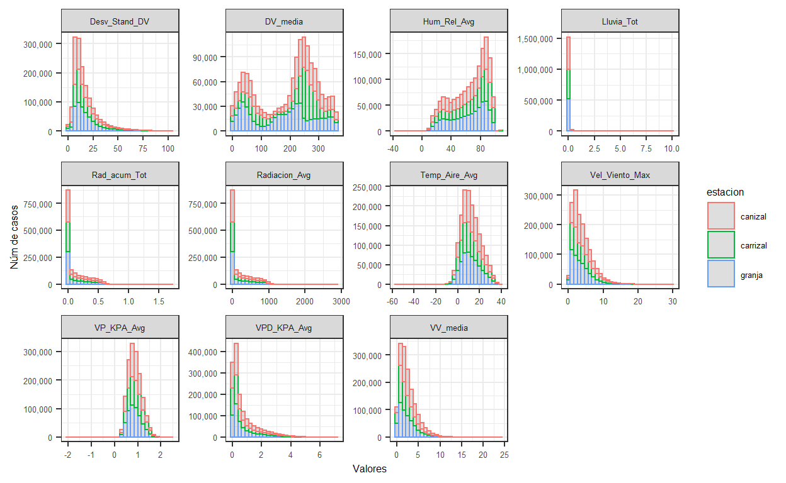
Aparentemente la distribución de valores en las tres estaciónes es casi idéntica, con excepción de la velocidad del viento, que es más variable sobre todo en la estación granja. También es la estación que tiene menos valores. Verifico la distribución:
df %>%
select (-TIMESTAMP,-RECORD, -c(latitud:diasemana)) %>%
pivot_longer(-estacion, names_to = "key", values_to = "value") %>%
ggplot(aes(value)) +
facet_wrap(~ key, scales = "free") +
geom_density(aes(fill = estacion), alpha = 0.2) +
theme_bw() +
theme(text = element_text(size=6)) +
xlab("Valores") +
scale_y_continuous(name = "Densidad")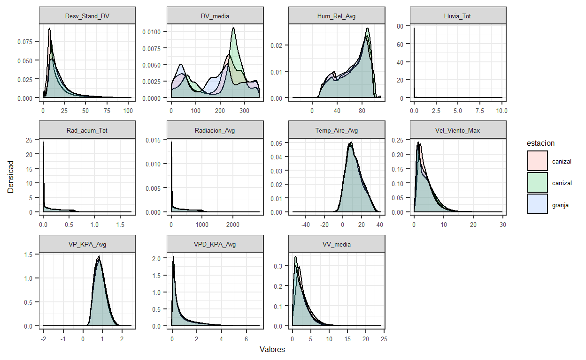
Efectivamente, la distribución de datos es idéntica para las tres estaciones, si exceptuamos los valores de velocidad del viento.
Finalmente voy a ver si hay valores anormales que aparezcan como valores extremos en los boxplot:
df %>%
select (-TIMESTAMP,-RECORD, -c(latitud:diasemana)) %>%
pivot_longer(-estacion, names_to = "key", values_to = "value") %>%
ggplot(aes(y = value)) +
facet_wrap(~ key, scales = "free") +
geom_boxplot(aes(colour = estacion )) +
theme_bw() +
theme(text = element_text(size=6),
axis.text.x=element_blank(),
axis.ticks.x=element_blank()) +
xlab("Estaciones") +
scale_y_continuous(name = "Valores", labels = comma)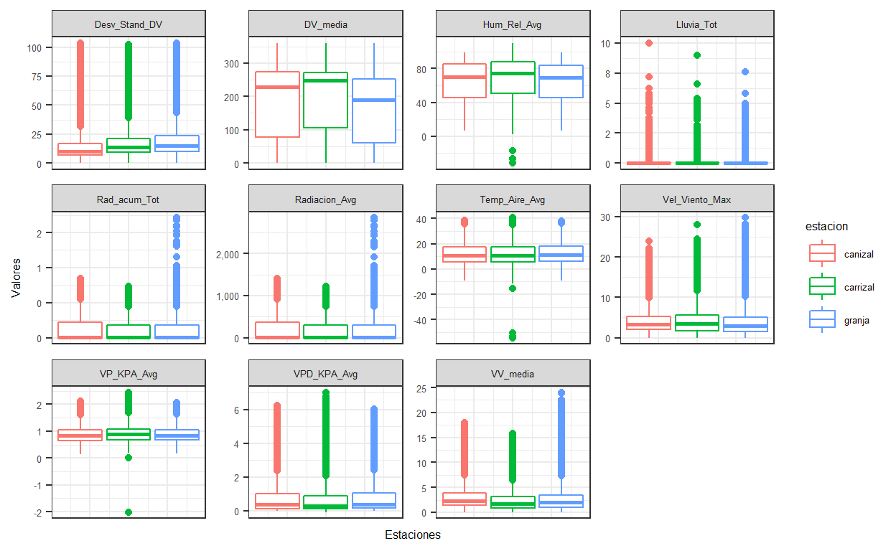
Los boxplot muestran algunas cosas extrañas:
Antes de continuar el análisis, tengo que decidir si considerar estos valores o eliminarlos.
ggplot(data = df, aes (as.factor(format(año,"%Y")),Hum_Rel_Avg)) +
geom_boxplot(aes(colour = estacion )) +
ggtitle ("Humedad relativa media", subtitle = "Evolución anual para el periodo 2008-2019") +
xlab("Año") +
theme_bw()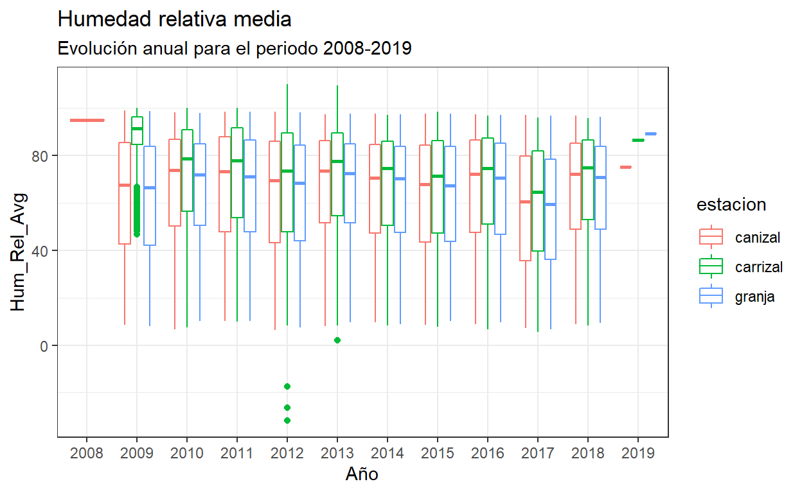
Hay varias cosas que me llaman la atención en este primer gráfico de la humedad relativa:
Sigo viendo los datos en detalle, agrupando ahora por meses
ggplot(data = df, aes (as.factor(format(mes,"%m")),Hum_Rel_Avg)) +
geom_boxplot(aes(colour = estacion )) +
ggtitle ("Humedad relativa media", subtitle = "Evolución mensual para el periodo 2008-2019") +
xlab("Año") +
theme_bw()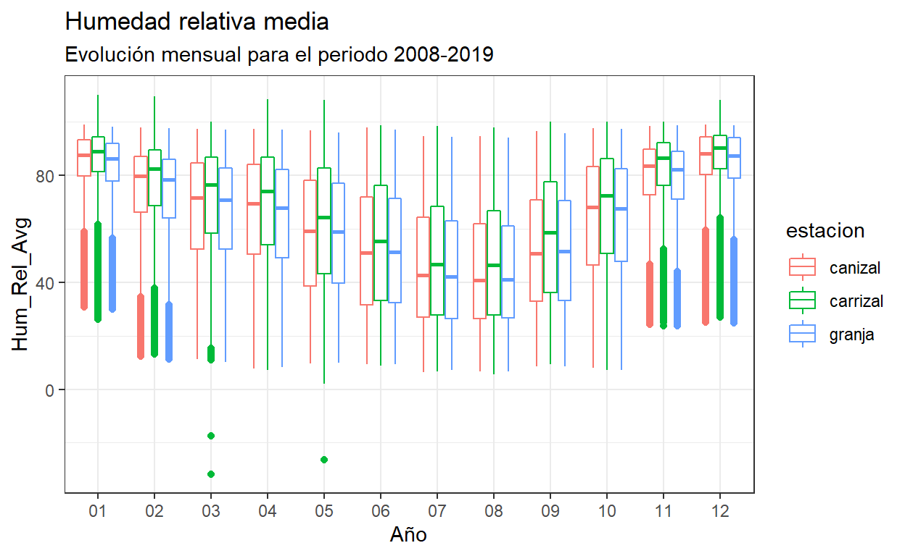
En la gráfica mensual se aprecia una clara tendencia estacional para las tres estaciones, que por otra parte parece bastante lógica: en nuestras latitudes, la humedad relativa es más baja en los meses de verano. Más tarde podré analizar el componente estacional de la serie para las tres estaciones.
ggplot(data = df, aes (as.factor(format(mes,"%m")),Hum_Rel_Avg)) +
geom_boxplot(aes(colour = estacion )) +
facet_grid(as.factor(format(año,"%Y"))~.) +
ggtitle ("Humedad relativa media", subtitle = "Evolución mensual por años para el periodo 2008-2019") +
xlab("Año") +
theme_bw()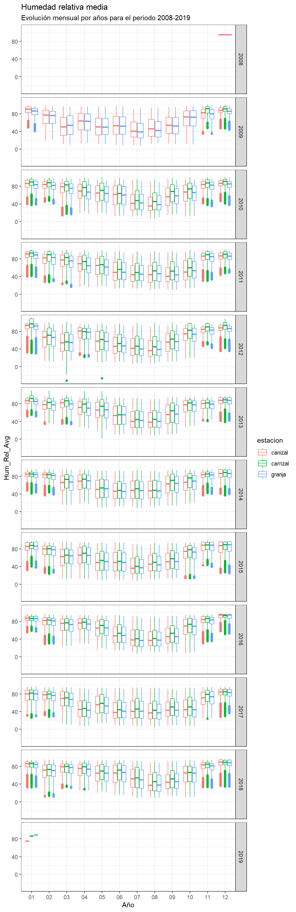
En el boxplot combinado confirmo que efectivamente los datos de Canizal de 2017 son únicamente de diciembre; Carrizal se ha incorporado a la serie en noviembre de 2008, y los datos de 2019 se corresponden con el mes de enero.
En cualquier caso, el boxplot anterior por meses no muestra diferencias importantes entre estaciones para los meses de enero, noviembre o diciembre. Puedo mantener los valores mensuales para el análisis de la serie estacional y eliminarlos para la comparación anual. A revisar.
Como la gráfica que más datos ha aportado es la de valores agrupados por mes, voy a utilizar el mismo modelo para los datos de temperatura media del aire.
ggplot(data = df, aes (as.factor(format(mes,"%m")),Temp_Aire_Avg)) +
geom_boxplot(aes(colour = estacion )) +
ggtitle ("Temperatura media del aire", subtitle = "Evolución mensual") +
xlab("Año") +
theme_bw()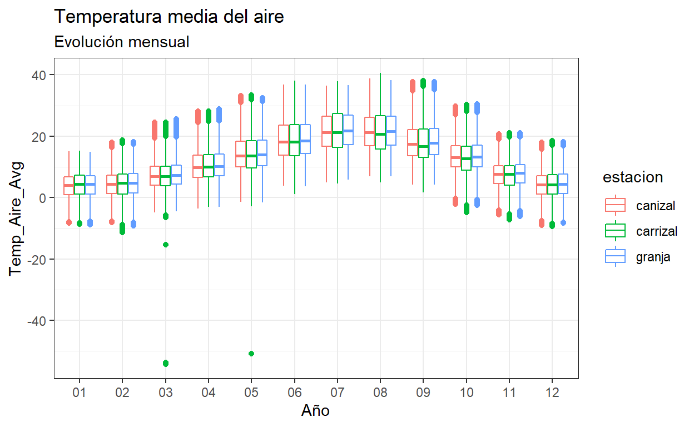
La gráfica mensual de temperatura del aire confirma datos anormales en marzo y abril de 2012 para la estación Carrizal. Con la evolución de temperaturas medias anual y los valores de las medianas y dispersión para estos meses, los valores por debajo de -40ºC pueden considerarse anómalos en mi opinión.
También en la temperatura del aire parece haber clara estacionalidad, con algunos valores extremos en algunos meses pero no demasiado lejos de los rangos habituales.
Voy a revisar la última variable que parecía tener valores anómalos, el promedio de la presión de vapor (VP_KPA_Avg)
ggplot(data = df, aes (as.factor(format(mes,"%m")),VP_KPA_Avg)) +
geom_boxplot(aes(colour = estacion )) +
ggtitle ("Promedio de la presión de vapor", subtitle = "Evolución mensual para el periodo 2008-2019") +
xlab("Año") +
theme_bw()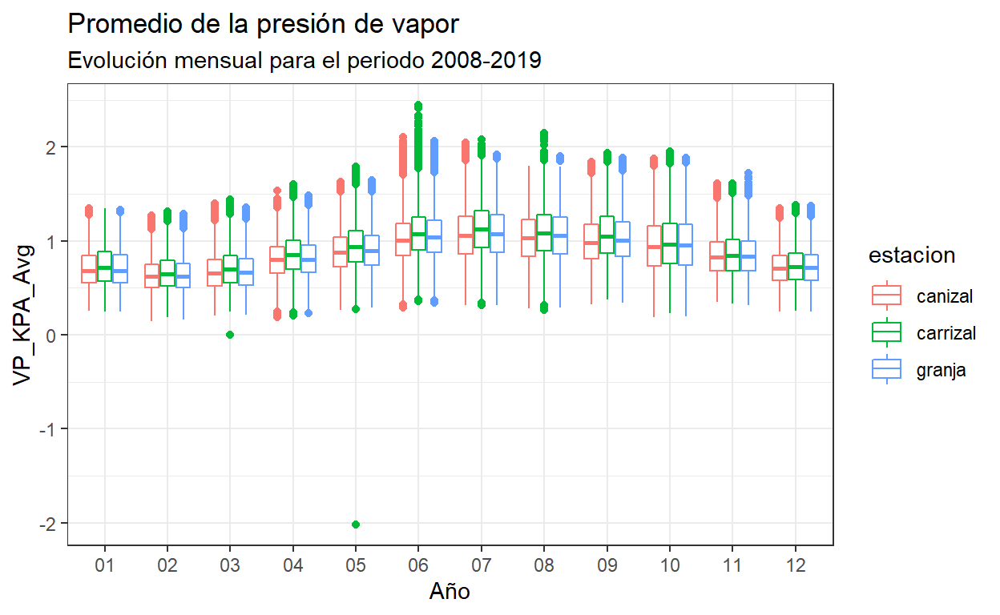
Efectivamente, el dato de presion de vapor negativa es anormal e imposible, luego es a eliminar. También aquí aparece ua componente estacional a analizar.
Conclusiones del primer análisis exploratorio de los datos:
Por lo tanto, procedo a eliminar esos datos
df$Hum_Rel_Avg[df$Hum_Rel_Avg < 0] <- NA
df$Temp_Aire_Avg[df$Temp_Aire_Avg < -40] <- NA
df$VP_KPA_Avg[df$VP_KPA_Avg < 0] <- NAVerifico las eliminaciones con los tres boxplot
ggplot(data = df, aes (as.factor(format(mes,"%m")),Hum_Rel_Avg)) +
geom_boxplot(aes(colour = estacion )) +
ggtitle ("Humedad relativa media", subtitle = "Evolución mensual para el periodo 2008-2019") +
xlab("Año") +
theme_bw()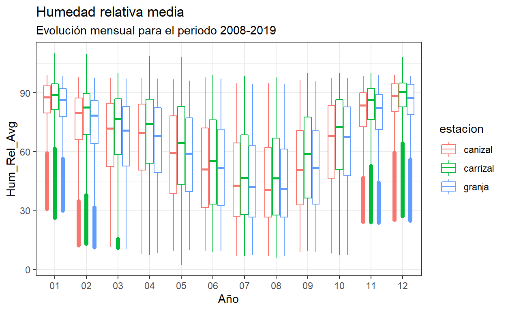
ggplot(data = df, aes (as.factor(format(mes,"%m")),Temp_Aire_Avg)) +
geom_boxplot(aes(colour = estacion )) +
ggtitle ("Temperatura media del aire", subtitle = "Evolución mensual para el periodo 2008-2019") +
xlab("Año") +
theme_bw()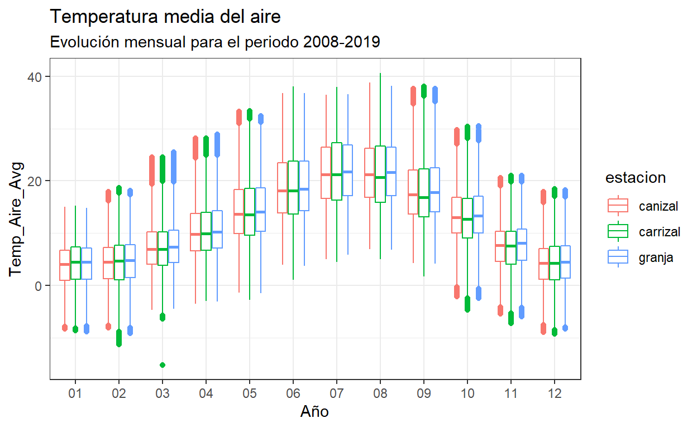
ggplot(data = df, aes (as.factor(format(mes,"%m")),VP_KPA_Avg)) +
geom_boxplot(aes(colour = estacion )) +
ggtitle ("Promedio de la presión de vapor", subtitle = "Evolución mensual para el periodo 2008-2019") +
xlab("Año") +
theme_bw()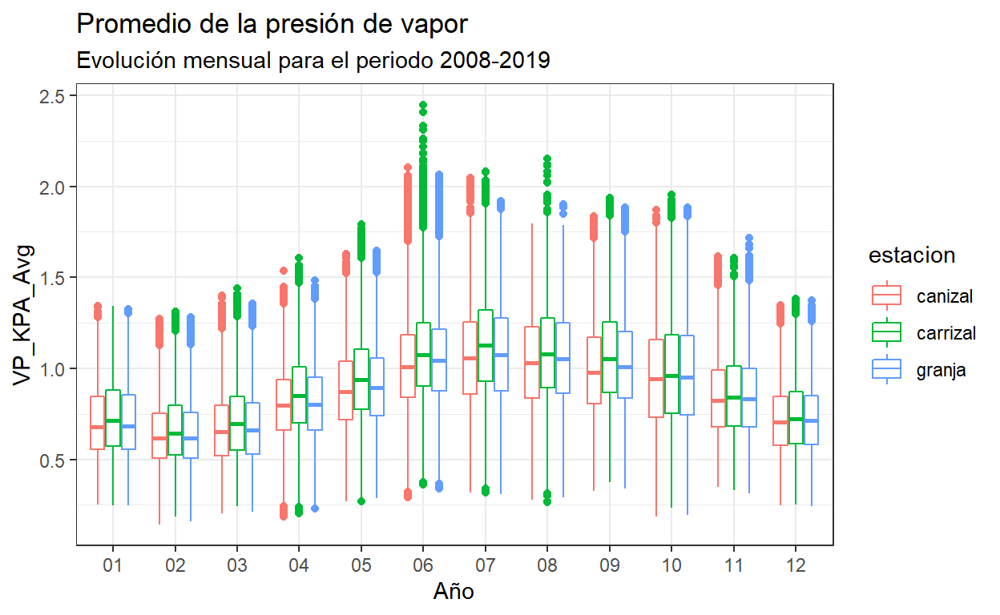
Una vez los datos corregidos, quedan listos para el análisis, que haré en principio en dos partes: